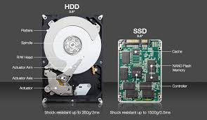

Componentes de una computadora:
¿Que es el disco duro interno?
En informática, la unidad de disco duro o unidad de disco rígido (en inglés: hard disk drive, HDD) es un dispositivo de almacenamiento de datos que emplea un sistema de grabación magnética para almacenar y recuperar archivos digitales. Se compone de uno o más platos o discos rígidos, recubiertos con material magnético y unidos por un mismo eje que gira a gran velocidad dentro de una caja metálica sellada. Sobre cada plato, y en cada una de sus caras, se sitúa un cabezal de lectura/escritura que flota sobre una delgada lámina de aire generada por la rotación de los discos.1 Permite el acceso aleatorio a los datos, lo que significa que los bloques de datos se pueden almacenar o recuperar en cualquier orden y no solo de forma secuencial. Las unidades de disco duro son un tipo de memoria no volátil, que retienen los datos almacenados incluso cuando están apagados.

¿Como se realiza la correcta instalacion?
-
Apagamos correctamente el ordenador y lo desconectamos de cualquier fuente de energía. El primer paso en esta tarea es mantener el equipo a salvo de cualquier elemento negativo y prepararlos para la instalación.
-
Seguimos retirando los paneles de la carcasa para poder llegar hasta la zona en donde se alberga el disco duro. Con un destornillador o directamente quitando los tornillos de presión quitamos con cuidado esta parte.
-
Retiramos el viejo disco duro. Todos los cables deberán estar bien desconectados para evitar que algunas partes del equipo puedan deteriorarse. Es importante a la hora de iniciar este proceso asegurarnos de que está todo preparado.
-
Cuando tenemos el disco duro instalado lo aseguraremos con los tornillos correspondientes. Se recomienda que esté instalado al lado de una ranura o de una salada de ventilación para que no se caliente demasiado y pueda funcionar de forma más eficiente.
-
Conectamos los cables, cada disco duro tiene un cableado similar a un pequeño USB que uniremos al ordenador siguiendo las instrucciones del fabricante. En este aspecto es importante mantener todo en orden.
-
El siguiente paso consistirá en conectar el disco duro a una fuente de energía. Es importante comprobar que no se mueven en absoluto y no puede desconectarse de repente, perdiendo parte de nuestra información o ocasionando algún problema técnico.
-
Cerramos la carcasa y nos dispondremos a encender de nuevo el ordenador. Este paso de comprobación es esencial para poder determinar si hemos hecho o no un buen trabajo.
-
Encendemos el ordenador y comprobamos con el disco duro empieza a girar, ese sonido nos indicará que hemos cumplido con éxito nuestra misión. En ese momento cargaremos el disco duro con el sistema operativo y empezaremos a añadirle la información adecuada.